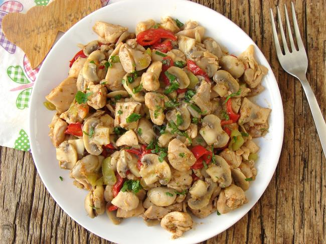
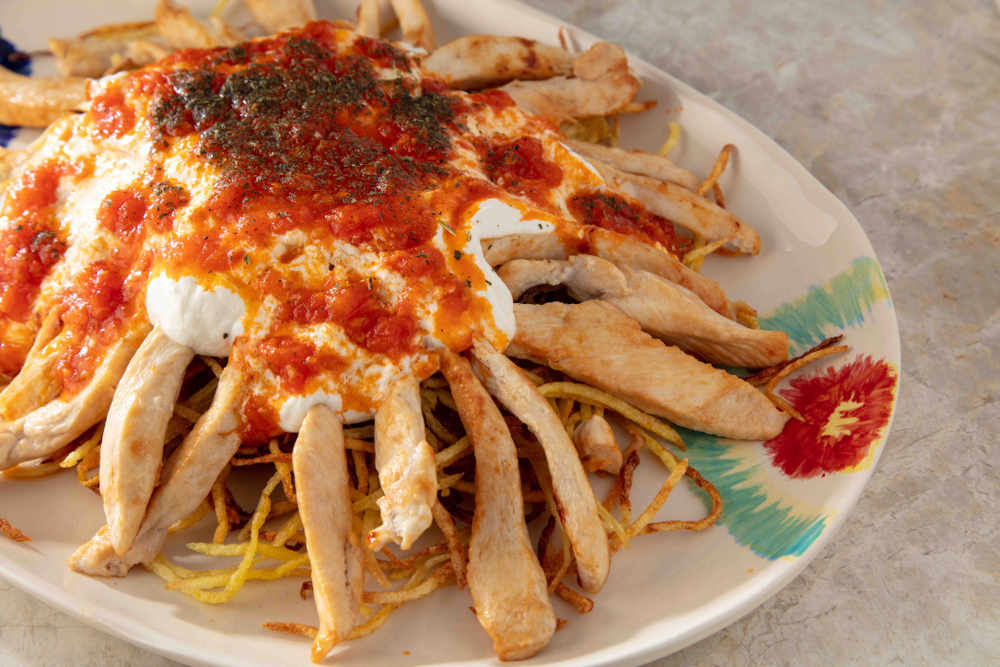

CHİCKEN MEAL
- 500 grams of chicken breast, cubed
- 1 large onion, chopped
- 1/3 cup of vegetable oil
- Juice of half a lemon
- 2 cloves of garlic, grated
- 1 teaspoon of salt
- 1/2 teaspoon of black pepper
- 1 teaspoon of red pepper flakes
- 1 teaspoon of paprika
- 1 teaspoon of dried oregano
- 4 green peppers
- 4 tomatoes
- Cube the chicken breast.Chop the onion finely.Squeeze the juice from half a lemon.
- In a mixing bowl, combine the chicken pieces, chopped onion, vegetable oil, lemon juice, grated garlic, salt, black pepper, red pepper flakes, paprika, and dried oregano. Mix the ingredients thoroughly and cover the bowl with plastic wrap. Let it marinate in the refrigerator for at least 1 hour.
- After marinating, thread the chicken pieces onto skewers, alternating with chopped green peppers and tomatoes.
- Grill the chicken skewers on a barbecue or grill until both sides are well-browned. During grilling, baste the skewers with the marinade to enhance the flavor.
- Serve hot. You can serve it with rice or flatbread if desired.

CHICKEN SKEWERS
Ingredıents:

CHICKEN AND MUSHROOM SAUTE
Ingredıents:
- 500 grams of chicken breast, diced
- 250 grams of mushrooms, sliced
- 1 large onion, chopped
- 2 cloves of garlic, crushed
- 1 teaspoon of salt
- 1/2 teaspoon of black pepper
- 1/3 cup of vegetable oil
- 1 teaspoon of red pepper paste
- 1 teaspoon of tomato paste
- 1/3 cup of water
- Dice the chicken breast.
- Slice the chicken and mushrooms to a similar size.
- Heat vegetable oil in a pan. Add chopped onions and sauté until they become translucent.
- Add the diced chicken and cook until the chicken changes color and releases and absorbs its juices.
- Then, add the sliced mushrooms and sauté until the mushrooms release and absorb their juices.
- Add crushed garlic, salt, black pepper, red pepper paste, and tomato paste. Stir and cook for a few more minutes.
- Pour in the water, stir, cover the pan, and simmer until the liquid is absorbed.
- Garnish the sauteed chicken and mushrooms with fresh thyme or parsley if desired before serving.

CHICKEN CASSEROLE
Ingredıents:
- 500 grams of chicken thighs or breasts, diced
- 2 tablespoons of vegetable oil
- 1 large onion, thinly sliced
- 2 cloves of garlic, minced
- 2 carrots, sliced
- 2 potatoes, diced
- 1 cup of peas
- 2 tomatoes, grated or diced
- 1 tablespoon of tomato paste
- 1 teaspoon of salt
- 1/2 teaspoon of black pepper
- 1 teaspoon of red pepper flakes
- 1 teaspoon of dried oregano
- 1 cup of hot water
- In a large pot, heat the vegetable oil. Add the diced chicken and brown on all sides.
- Add sliced onions and minced garlic. Saute until the onions are softened.
- Add carrots, potatoes, and peas (if using). Saute for a few minutes, stirring occasionally.
- Incorporate grated or diced tomatoes, tomato paste, salt, black pepper, red pepper flakes (if using), and dried oregano. Mix well.
- Pour in hot water and lemon juice. Stir the mixture and bring it to a boil.
- Reduce the heat, cover the pot with a lid, and simmer until all ingredients are tender.
- Once cooked, transfer the casserole mixture into serving dishes.

CHICKEN DONER
Ingredıents:
- 600 grams of chicken breast (fillet)
- 3 tablespoons of olive oil
- 1 onion
- 1 tablespoon of yoghurt
- 1/2 teaspoon pepper paste
- 1/2 teaspoon black pepper
- 1 tablespoon of yoghurt
- 1/4 teaspoon cumin
- 1 teaspoon of thyme
- 1/4 teaspoon coriander
- 1 teaspoon mustard
- Slice fillet chicken breasts into thin slices like leaves.After peeling the onion, grate it and transfer it to a bowl with its juice.
- Mix onion juice with pepper paste, olive oil, yoghurt, black pepper, salt, coriander, cumin, mustard and thyme.Add the chicken breasts to the sauce you prepared and marinate them.
- Roll out a wide stretch on the kitchen counter.Arrange the chicken slices on top of each other in layers on the stretch film.
- Close the cling film from the edges and wrap the chicken breast in a roll.After closing the package airtight, put it in the deep freezer and let it rest for at least 2 hours.
- Slice the marinated chicken breast thinly at the end of the waiting period.
- Fry the chicken slices, front and back, in a preheated non-stick pan.
TANTUNI
Ingredıents:
- 500 grams of chicken breast, thinly sliced
- 2 tablespoons of vegetable oil
- 1 large onion, thinly sliced
- 1 green bell pepper, thinly sliced
- 1 red bell pepper, thinly sliced
- 2 tomatoes, finely chopped
- 2 cloves of garlic, crushed
- 1 teaspoon of tomato paste
- Salt and black pepper (to taste)
- Juice of half a lemon
- Fresh greens (lettuce, green onions, parsley)
- Lavash bread
- Thinly slice the chicken breast.
- Heat vegetable oil in a wide pan. Add thinly sliced onions and saute until translucent.
- Add chicken slices and cook on low heat until the chicken releases and absorbs its juices.
- Add thinly sliced green pepper, red pepper, chopped tomatoes, and crushed garlic. Stir and cook until all ingredients are well-cooked.
- Add tomato paste, salt, and black pepper. Mix well and cook for a few more minutes.
- Squeeze lemon juice over the mixture and stir.
- Add fresh greens and stir. Remove from heat.
- Lightly warm the lavash bread.
- Place the Chicken Tantuni filling onto the warm lavash. Optionally, add sumac-spiced onions and pomegranate molasses.
- Roll the lavash to form a wrap.

COKERTME KEBAB
Ingredıents:
- 500 grams of chicken breast, thinly sliced
- 1 onion, grated
- 2 cloves of garlic, crushed
- 1 teaspoon of tomato paste
- 1 teaspoon of red pepper flakes
- 1/2 cup of vegetable oil
- Salt and black pepper
- 4 potatoes
- 1 cup yogurt
- Julienne the chicken, meaning cut them into long strips.
- Whisk the marinade ingredients and add the chicken. Let it marinate in the refrigerator for 1 hour.
- Peel and thinly slice the potatoes into matchstick-thin pieces. Fry them in hot oil until golden brown.
- Whisk the yogurt and grate the garlic into it.
- For the tomato sauce, sauté the tomato paste in a tablespoon of oil. Add grated garlic and thyme.
- Add a little water to the mixture, simmer for a bit, and then turn off the heat
- Cook the marinated chicken in a pan with oil.
- Place the fried potatoes on a plate, then pour yogurt sauce over them, followed by the tomato sauce, and finally, arrange the cooked chicken on top.